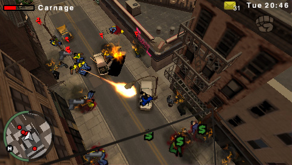
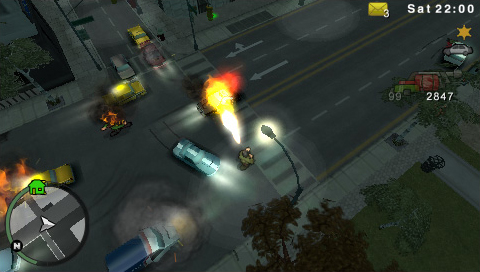
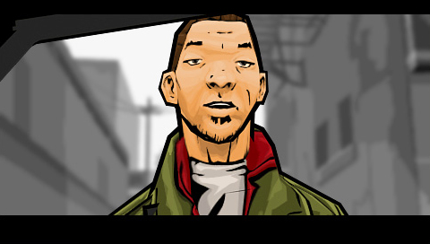
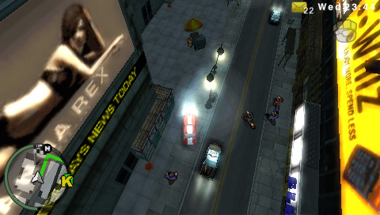

Grand Theft Auto: Chinatown Wars

Descripción
Grand Theft Auto: Chinatown Wars nos pone en la piel de Huang Lee, un joven heredero de una familia adinerada que llega a Liberty City tras el asesinato de su padre. Su misión es entregar una antigua espada a su tío Kenny para garantizar que su familia mantenga el control de las tríadas de la ciudad.
Sin embargo, su viaje acaba convirtiéndose en una auténtica pesadilla cuando es asaltado y dado por muerto. A partir de ese momento, Huang tendrá que abrirse camino por el mundo criminal de Liberty City, buscando venganza, riquezas y respuestas sobre lo ocurrido.
El juego mantiene la esencia de mundo abierto de la saga, pero incorpora una perspectiva isométrica y diferentes mecánicas adaptadas a su formato portátil.
Capturas del videojuego




Información del videojuego
| Desarrollador | Plataforma | Fecha de lanzamiento |
|---|---|---|
| Rockstar Leeds, Rockstar North | iOS, Android, Kindle, PSP, Nintendo DS | 17 de marzo de 2009 |